캐럿·선택 정밀 분석 — 임베드 실측
sc-hazel-kappa 임베드(동일 소스 로컬 빌드)를 헤드리스 크롬으로 몰아 12pt·50pt 전 시나리오를 캡처하고, DOM 캐럿 rect · 엔진 커서 rect · 렌더 픽셀(글자 잉크 bbox) 3계층을 대조했다. 2026-08-09.
1적발·수리한 결함 — 50pt 밑줄 관통
| 크기 | 글자 잉크 바닥(픽셀 실측) | 수리 전 밑줄 top | 수리 후 밑줄 top | 판정 |
|---|---|---|---|---|
| 12pt | 278~280px | 279px (우연히 정합) | 282px (잉크+2~3px) | 정상 |
| 50pt | 334px | 322px — 글자 위 12px 관통 | 335px (잉크+1px) | 수리됨 |
원인: 엔진 커서 rect에서 기준선을 y + 0.8·height로 추정했는데, 렌더러의 한글 잉크는
크기와 무관하게 글자 rect 바닥 − 1px까지 내려온다(12pt·50pt 공통 실측). 작은 글자에선 두 값이
우연히 겹쳐 안 보였고, 50pt에서 12px 차이로 드러났다. 밑줄 앵커를 rect 바닥으로 교체.
2캐럿 상태 매트릭스 — 12pt vs 50pt (수리 후)
① 입력 전 / 문단 시작 — 세로 하늘색 캐럿
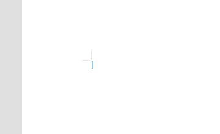
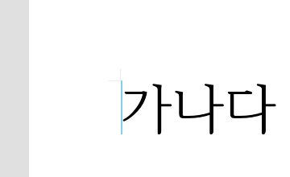
② 타이핑 직후 — 직전 글자 폭의 밑줄
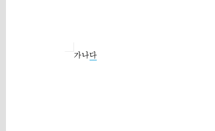
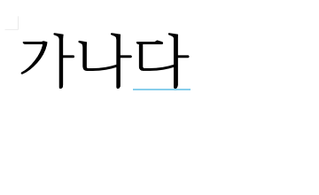
③ 깜빡임 (500ms 간격 2프레임)

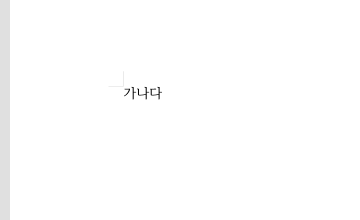
④ 공백 입력 뒤 — 세로 캐럿으로 복귀
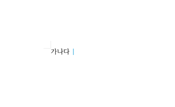
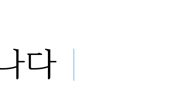
⑤ 키보드 이동 — ←로 글자 사이, Home으로 시작
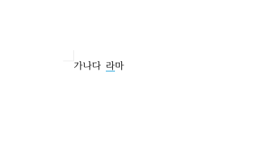
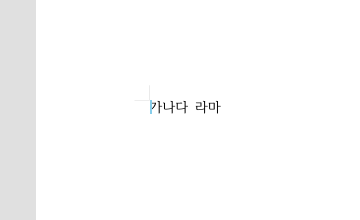
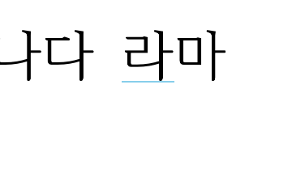

3드래그 선택 — 밴드 기하 실측
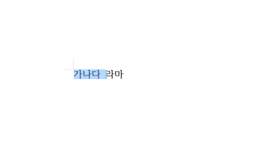
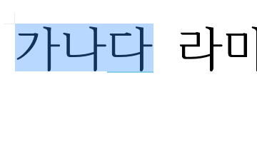
| 크기 | 선택 밴드 | 글자 잉크 | 관계 |
|---|---|---|---|
| 12pt | y 268~281 (h=13) | y 269~280 | 잉크 위 1px·아래 1px 여유 — 글자 상자 높이 |
| 50pt | y 268~335 (h=67) | y 272~334 | 잉크 위 4px·아래 1px 여유 — 글자 상자 높이 |
4수리 반영 상태
50pt 밑줄 앵커 수리는 이 보고서 작성 시점에 로컬 검증까지 완료했고, 임베드 배포는 캐럿 1차 배포와 같은 경로(studio → sc- 재벤더링)로 나간다. 수리 전/후 수치는 §1 표와 같다.
5한컴 실측 대조 — 웹한글(hancomdocs) 픽셀 계측 (2026-08-10 완료)
· 한컴은 타이핑 직후에도 세로 캐럿이다. 밑줄은 한글 조합 중에만 나타난다 — 우리의 "확정 글자 뒤 상시 밑줄" 스펙과 다르다.
· 조합 밑줄 규칙(실측): 폭 = 조합 글리프 폭, 두께 2px, top = 줄상자 바닥 + 2px, 세로 캐럿 없이 단독 표시, 캐럿과 같은 주기로 깜빡인다.
· 선택 밴드 = 줄간격(160%) 포함 줄 전체 높이 — §3의 가설이 확정됐다.
① 타이핑 직후 — 한컴은 세로, 우리는 밑줄
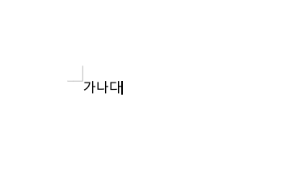
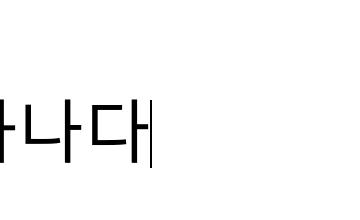
② 한글 조합 중 — 밑줄이 나타나는 유일한 상태
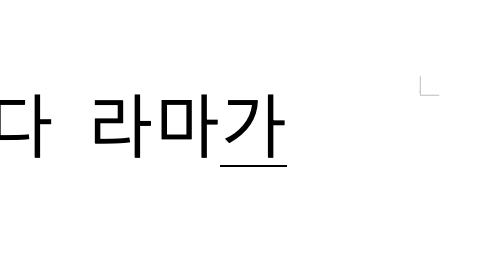
조합 밑줄도 깜빡인다 — 10프레임 추적에서 세로 캐럿과 같은 ~530ms 주기의 ON/OFF 교대를 확인했다. 즉 한컴의 "가로 캐럿"의 정체는 IME 조합 표시이고, 조합이 끝나는 순간 세로 캐럿으로 복귀한다.
③ 드래그 선택 — 줄 전체 밴드
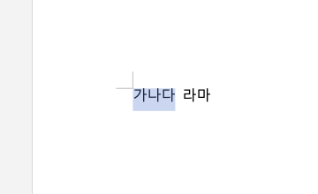
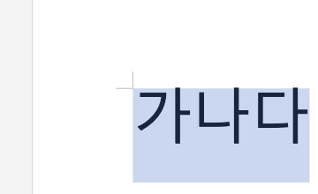
④ 정합 대조표 — 한컴 실측 vs 임베드 실측
| 항목 | 한컴 웹한글 (실측) | 임베드 (실측, §1~3) | 판정 |
|---|---|---|---|
| 세로 캐럿 크기 | 2px 폭 × 줄상자 높이 (12pt 17px / 50pt 68px, 잉크의 1.06~1.13배) | 2px 폭 × 12pt 13.3px / 50pt 66.7px (잉크의 1.06~1.11배) | 비율 정합 |
| 세로 캐럿 x | 글리프 잉크 시작 5px 왼쪽 = advance 경계 | advance 경계 | 정합 |
| 타이핑 직후(조합 확정 후) | 세로 캐럿 | 밑줄 캐럿(상시) | 불일치 — 스펙 결정 필요 |
| 조합 중 표시 | 밑줄만: 글리프 폭 × 2px, 줄상자 바닥+2px, 깜빡임 | (조합 구분 없음 — 밑줄이 확정 글자에도 표시) | 불일치 |
| 밑줄 세로 위치 | 줄상자 바닥 + 2px (12/50pt 공통) | 글자 잉크 바닥 + 1~3px | 근소 차이 (한컴이 2~5px 아래) |
| 선택 밴드 높이 | 줄간격 포함 줄 전체 (잉크의 1.66배 = 160% 줄간격) | 글자 상자만 (잉크의 1.06~1.11배) | 불일치 — 수리 후보 |
| 캐럿 색 | 검정 (선택 밴드는 연파랑·글자색 유지) | 하늘색 | 의도적 차이 (현행 스펙) |
| 깜빡임 | 세로·밑줄 모두 ~530ms 주기 | 세로·밑줄 모두 500ms | 정합 |
① 선택 밴드를 줄간격 포함 줄 전체 높이로 — 한컴 정합, 기하 규칙 명확(잉크×줄간격%), 효과가 가장 크다.
② 밑줄 캐럿을 조합 중에만 표시하고 그 외엔 세로 캐럿 — 한컴과 동작 정합. 단, 현행 "글자 뒤 상시 밑줄"은 사용자 지정 스펙이므로 유지 여부 판단 필요.
③ 밑줄 앵커를 "잉크 바닥+1~3px" → "줄상자 바닥+2px"로 — ②와 묶어서 진행할 때 의미 있음.
6글자처럼 취급(TAC) 개체 — 표·그림 실측 대조와 엔진 수리 (2026-08-10)
① 한컴 실측 — TAC 개체의 기준선 잠김 규칙
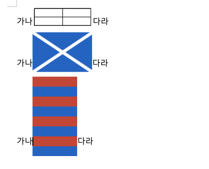
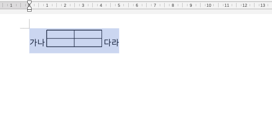
| 개체(높이 px) | 한컴: 바닥이 기준선 아래로 | rhwp 엔진(HEAD) | 판정 |
|---|---|---|---|
| 표 2×2 (36) | 3px | 2.4px | 정합(±1) |
| 그림 (80) | 11px | 12px | 정합(±1) |
| 그림 (160) | 23px | 24px | 정합(±1) |
| 줄 전진(줄높이) | 50 / 89 / 170px | 51.4 / 89.6 / 169.6px | 정합(±1.4) |
실측 회귀식: 잠김 ≈ 0.15·H − 1px (r=0.85 기준선 분할) — 두 그림이 정확히 선형(기울기 0.15), 표는 보더 렌더 두께만큼의 ±1px 오차. 엔진의 r-분할 구현(8/9 롤업)이 한컴과 일치함을 실물로 확정.
② 한컴 실측 — TAC 라인의 캐럿·선택 규칙
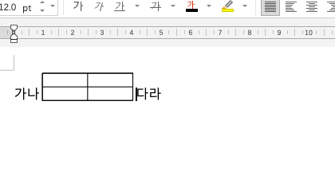
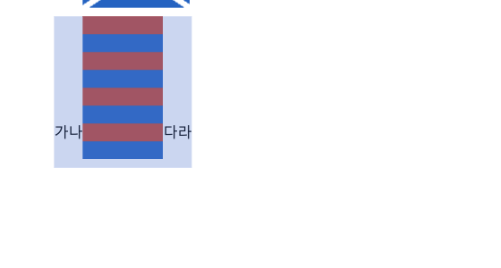
추가 관찰: 한컴에서 ←→ 키는 TAC 표를 건너뛰지 않고 셀 안으로 진입하며(셀 캐럿 h14=셀 10pt), 표 테두리 클릭은 개체 선택(핸들)이 된다.
③ 우리 쪽 적발·수리 — 엔진 질의 3건
| # | 증상 (수리 전 실측) | 원인 | 수리 |
|---|---|---|---|
| 1 | 표 뒤 '다' 뒤 밑줄 캐럿이 두 글자 폭(32px), 마지막 글자 선택 rect 빈 배열 → 끝 캐럿이 세로로 오락가락 | TAC 표 문단 전용 레이아웃(layout_inline_table_paragraph)이 TextRun.char_start 를 텍스트 좌표로 기록 — 커서/선택 워커는 논리 좌표(개체=1칸)를 기대 | run 시작 글자의 논리 위치로 변환해 기록 (paragraph_layout.rs, 3개 지점) |
| 2 | Home/End(줄 경계) 캐럿이 줄 상자 높이(표 라인에서 35.5px)로 커짐 — 클릭/화살표 캐럿(16px)과 비일관, 한컴과도 불일치 | 줄 경계 커서 후보가 run bbox(줄 박스) y/h 를 그대로 사용 | 캐럿 규격(baseline−ascent, 글꼴 높이)으로 후보 y/h 계산 (cursor_nav.rs) |
| 3 | 8/5 배포 wasm: TAC 그림이 기준선 잠김 없이 바닥=기준선(§6-① 규칙 위반), 구버전 CLI는 표가 줄 머리로 이탈 | 8/9 롤업 이전 엔진이 임베드에 잔존 | 롤업 포함 최신 엔진으로 wasm 재벤더링 |
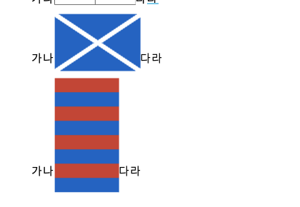
핀 테스트: tests/officex_tac_table_caret_selection.rs 3건(캐럿 x 단조·텍스트 높이 / 줄 경계
캐럿 높이 / 표 뒤 선택 rect 한 글자 폭) + 픽스처 samples/officex_tac_mid_anchor.hwpx(한컴 원본
저장본). 관련 회귀(선택 rect·TAC 커서 나브·글머리 캐럿 등 20건 + lib 2340건) 통과.
남은 니글: '다' 뒤 밑줄의 세로 앵커가 다른 밑줄보다 2.4px 낮음(선택 rect 좌단이 표 상자 히트를 우선하는 동률 규칙) — 시각 영향 미미, 밴드 커버리지 규칙과 얽혀 있어 §5 수리 후보 ①과 함께 다룰 것.
계측: 헤드리스 크롬 + 픽셀 스캔(잉크 = RGB<120), 시나리오 14캡처 × 2회(수리 전/후) · 한컴 실측: hancomdocs 웹한글 + CDP 9777, 깜빡임 2프레임 diff·조합은 Input.imeSetComposition · TAC 실측: 동일 문서 HWPX 내려받아 엔진/스튜디오 픽셀 대조 · 캐럿 구현 rhwp-studio(입양본) caret-renderer.ts · 2026-08-09~10